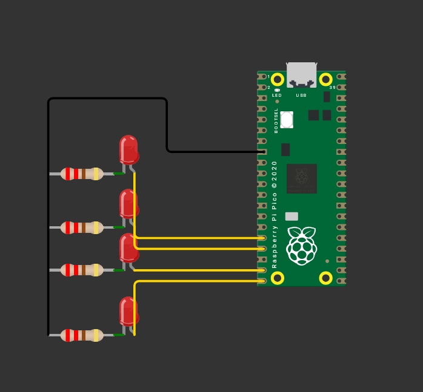

Contador Binario de 4 Bits
Esta práctica consiste en implementar un contador binario de 4 bits utilizando el Raspberry Pi Pico, donde cuatro LEDs muestran en tiempo real la representación binaria de los números del 0 al 15. El objetivo es aplicar el uso de operaciones lógicas y máscaras para el control de salidas digitales y reforzar la comprensión del sistema binario..
1) Resumen
- Nombre del proyecto: Contador Binario de 4 bits
- Equipo / Autor(es): Antonio Martínez
- Curso / Asignatura: Sistemas Embebidos
- Fecha: 25/08/2025
- Descripción breve: Se programo un contador binario de cuatro bits.
Información del proyecto:
C: Se utiliza el lenguaje C con el SDK de Raspberry Pi Pico, aprovechando librerías como pico/stdlib.h para el manejo de GPIO y retardos de tiempo. - Raspberry Pi Pico / Pico 2
Material utilizado:
- Cable micro-USB / USB-C para la programación y alimentación
- Protoboard
- 4 LEDs de 5 mm o SMD
- 4 resistencias (220 Ω – 330 Ω) para limitar la corriente de los LEDs
- Cables de conexión (jumpers)
- Computadora con Visual Studio Code y el entorno Pico SDK configurado
- Alimentación (a través del puerto USB del Pico)
1) Objetivos
-
Objetivos de la práctica
-
Comprender el uso de salidas digitales en el microcontrolador Configurar los pines GPIO del Raspberry Pi Pico como salidas para controlar LEDs.
-
Implementar un contador binario en hardware Representar en 4 LEDs la cuenta de 0 a 15, utilizando operaciones lógicas y máscaras para manipular bits.
-
Aplicar lógica de desplazamiento y enmascaramiento Utilizar operadores bit a bit (<<, &, |) para mapear valores binarios a los pines seleccionados del microcontrolador.
-
Familiarizarse con el control de tiempo en programas embebidos Manejar retardos en milisegundos para visualizar la secuencia del contador en los LEDs.
-
Relacionar teoría con práctica Observar cómo los números en base binaria se traducen en encendidos y apagados de LEDs, reforzando el entendimiento de la representación binaria en sistemas digitales.
2) Circuito
La siguiente imagen muestra las conexiones realizadas, se utilizaron 4 resistencias de 220 ohms y 4 leds rojos


3) Codigo
#include <stdio.h>
#include "pico/stdlib.h"
#define A 12
#define B 13
#define C 14
#define D 15
const uint32_t LED_MASK = (1u << A) | (1u << B) | (1u << C) | (1u << D) ;
int main() {
stdio_init_all();
gpio_init_mask(LED_MASK);
gpio_set_dir_out_masked(LED_MASK);
gpio_put_masked(LED_MASK, 0);
while (true) {
for (uint32_t n = 0; n < 16; n++) {
gpio_put_masked(LED_MASK, n<<12);
sleep_ms(1000);
}
/* gpio_put_masked(LED_MASK, LED_MASK);*/
}
return 0;
}
4) Explicación del programa
Explicación del código
Este programa implementa un contador binario de 4 bits en un Raspberry Pi Pico usando los GPIO 12–15 para controlar cuatro LEDs.
Definiciones y máscara
#define A 12
#define B 13
#define C 14
#define D 15
const uint32_t LED_MASK = (1u << A) | (1u << B) | (1u << C) | (1u << D);
Se asignan nombres a los pines.
La máscara (LED_MASK) permite configurar y escribir en todos los pines a la vez.
Inicialización
gpio_init_mask(LED_MASK);
gpio_set_dir_out_masked(LED_MASK);
gpio_put_masked(LED_MASK, 0);
Inicializa los pines 12–15, los configura como salida y los apaga.
Bucle principal
for (uint32_t n = 0; n < 16; n++) {
gpio_put_masked(LED_MASK, n << 12);
sleep_ms(1000);
}
n << 12 alinea el número con los GPIO 12–15.
Cada segundo se actualiza el estado de los LEDs mostrando el conteo binario.